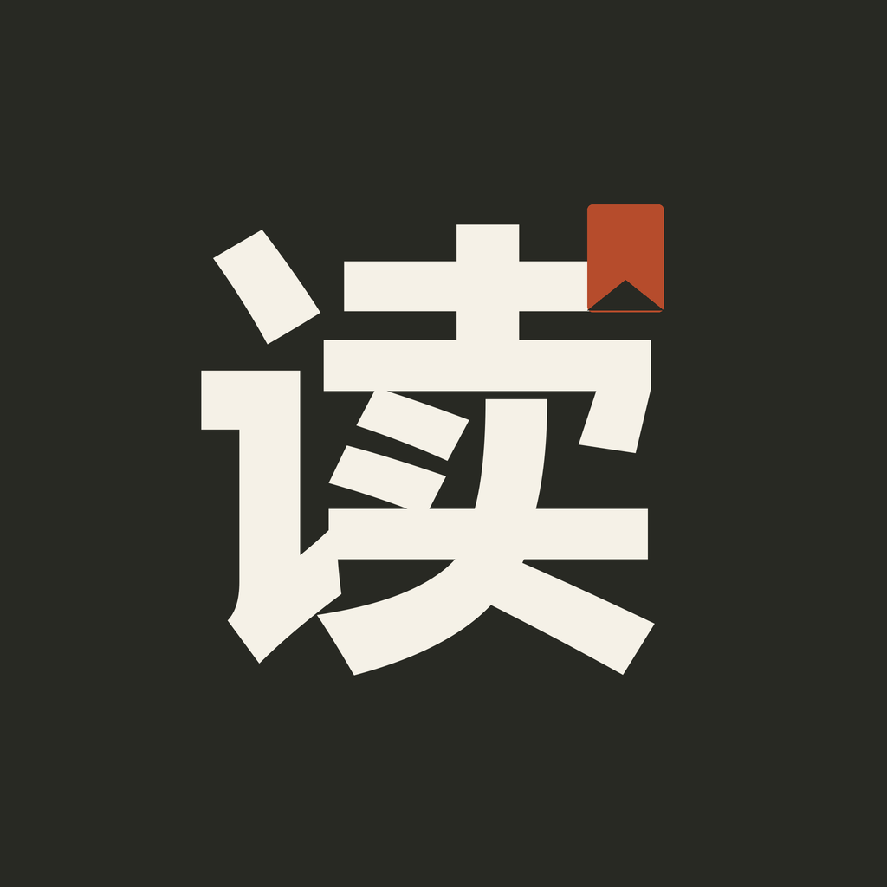

A / 随手查书推荐

明白生活
通过阅读，把生活中的选择看明白。书页与日光更温暖，名称的查阅属性稍弱。
微信列表里的样子
明白生活查阅《高性价比人生指南》
明亮，阅读感更强
下载 1024px PNG
一本书，随时查阅
三组名称与头像，延续当前 C 风格。头像同时展示方形、圆形与小尺寸效果。

推荐 A：名字说明用途，头像也与当前配色统一。
候选名称尚未查重，是否可用以微信公众平台审核为准。原书名称与作者署名继续保留在阅读页和关于页。选择仅保存在此演示，不修改小程序配置。
返回小程序交互演示 ↗